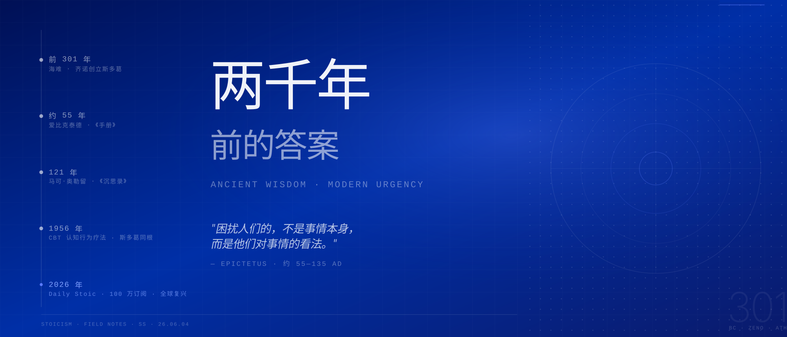

你的判断、行动、面对困境的态度——全力投入，不保留。
别人的看法、天气、市场走向、他人行为——彻底放手，不再内耗。
"有些事情在我们的控制之内，有些则不在。"——爱比克泰德《手册》开篇第一句
出生为奴，无财无权。主人当着他的面扭断他的腿，他保持平静。一个什么都没有的人，教会了后世什么是真正的自由。
罗马最富有的人之一，尼禄的导师。他在被赐死时平静地切开血管，与朋友谈话直到最后一刻。
"我们受苦，不是因为事情本身，而是因为我们对事情的看法。"
罗马帝国皇帝。《沉思录》从来不是写给别人看的——那是他每天早晨给自己的提醒：你终将腐烂成土，你的愤怒毫无意义。这不是悲观，这是清醒。
健康、财富、声誉——这些可以追求，但失去它们不构成真正的损失。这四种德性完全在你的控制之内。

前媒体操纵者，《障碍即道路》作者。Daily Stoic 邮件订阅者超过 100 万。
越战战俘，靠爱比克泰德《手册》在战俘营撑过了 7.5 年。
斯多葛主义 2300 年前就是为失控环境设计的。今天：信息过载、裁员、疫情——它比任何时代都更适用。
想象你最害怕失去的东西已经失去了。你会发现那些无法承受的失去，其实是可以承受的——同时突然意识到你现在拥有的有多珍贵。
每当感到焦虑，停下来问："这件事在我的控制之内吗？"如果是，专注行动；如果不是，彻底放手，不再内耗。
早晨问：今天可能发生什么困难，我怎么应对？傍晚回顾：有没有在无法控制的事上浪费精力？这是认知校准，不是心理咨询。